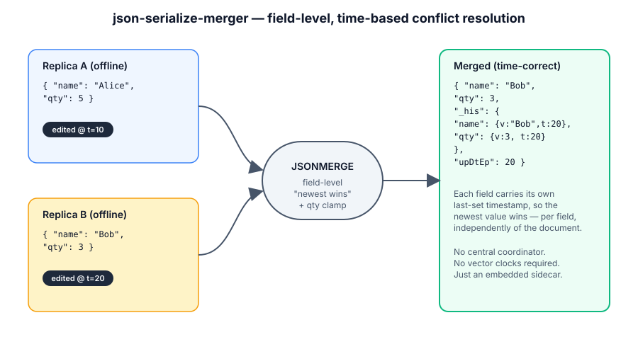
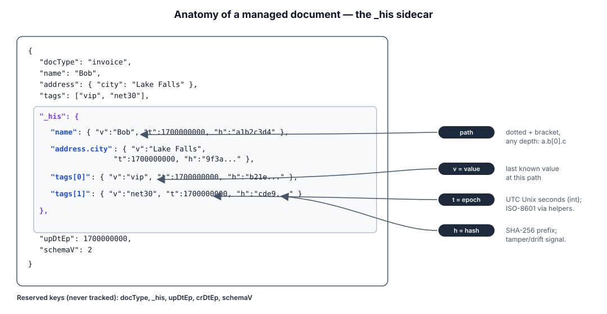
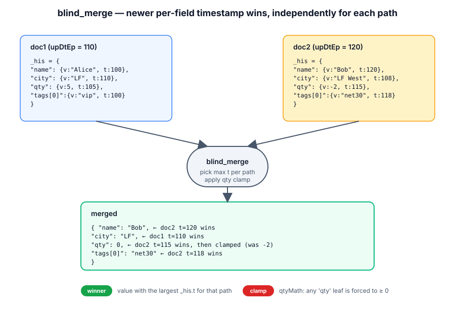
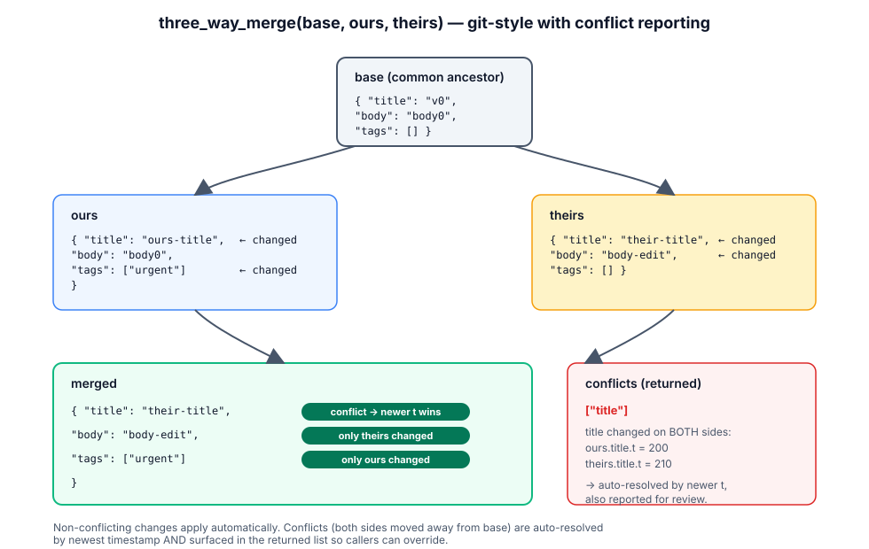

Diagrams — what happens under the hood
Four small SVGs that map the playground's operations to the underlying field-level, timestamp-based conflict-resolution model. Click any image to open it full-size.
① Overview
Two offline replicas of the same logical document are merged into a single time-correct result, field by field.

② _his sidecar
Anatomy of the bookkeeping sidecar: every path — nested
objects and array indices included — gets a {t,h}
record (epoch timestamp + short content hash).

③ blindMerge
Symmetric reconcile of two copies of the same logical doc. For each path the newer per-field timestamp wins, independently from every other path.

④ threeWayMerge
Git-style merge: base, ours,
theirs. Reports the conflicting paths but still
auto-resolves each one by newer timestamp.

makeNewDoc(doc)
Stamp a plain JSON document with the _his sidecar, upDtEp, crDtEp, etc.
updateDoc(doc, changes)
Apply a list of changes. Accepts legacy [{k:v}], dotted paths, bracket-array, or nested dicts.
mergeDocReq(doc1, doc2)
Asymmetric merge: pull newer per-field values from doc2 into doc1. The two may have different docTypes.
blindMerge(doc1, doc2)
Symmetric per-field "newer timestamp wins" reconcile of two copies of the same logical doc.
threeWayMerge(base, ours, theirs)
Git-style: reports conflicting paths (still auto-resolved by newer timestamp).
diffDocs(a,b) / patchDoc(doc, ops)
RFC 6902 JSON Patch round-trip. Compute a diff between two docs, or apply ops to a managed doc.
diffDocs
patchDoc
validate / historyIso / listChangesSince
Inspect a managed doc: drift & tamper checks, human-readable history, recent changes since an epoch.
Document over time — one invoice through every operation end-to-end demo
A single invoice doc is created, edited, merged from a
partial back-office update, reconciled with an offline mobile
replica, three-way-merged across two concurrent editors, diffed
& patched, and finally inspected. The clock advances one day
between steps so the per-field timestamps in _his
tell the real story.
-
1makeNewDoc
Bob creates a fresh invoice. The library stamps every field with the current epoch & a content hash.
makeNewDoc({docType:"invoice", name:"Bob Smith", qty:5, ...})(click ▶ Run demo)
-
2updateDocNext day Bob fixes a city typo and adds a tag — only the touched paths get new
ts.updateDoc(doc, [{"address.city":"Lake Falls West"}, {"tags[1]":"net30"}])
-
3mergeDocReqBack-office posts a partial
invoiceUpdatedoc with a differentdocType— paid=true and a qty bump.mergeDocReq(invoice, invoiceUpdate)
-
4blindMergeBob's offline mobile (still had
qty=5, but editedaddress.cityyesterday) comes back online — symmetric per-field reconcile.blindMerge(server, mobile)
-
5threeWayMergeTwo users edit the same
baseoffline; ours changesqty, theirs changesaddress.city— one conflict, auto-resolved by newer timestamp.threeWayMerge(base, ours, theirs) → {merged, conflicts}
-
6diffDocs & patchDocCompute an RFC-6902 JSON Patch between the day-0 snapshot and the current doc, then apply it to a fresh copy to prove round-trip.
patchDoc(snapshot, diffDocs(snapshot, current))
-
7validate & historyIsoInspect the result: validate the sidecar and pretty-print every field's edit history with ISO timestamps.
{validate(doc), historyIso(doc)}
pack_his(doc, fmt) · unpack_his(doc) schemaV 3
_his is library-only metadata. Pick how you want it
serialized for storage — the library auto-detects the format on
every call (updateDoc, blindMerge, …) so
you can go back and forth freely between JSON and
binary.
① dict (default JSON)
—In-memory canonical: _his[path] = {t,h}, no value duplication.
② cols (columnar JSON)
—Columnar JSON. _hisF:"c"; _his = {p:[…], t:[…], h:[…]}.
③ cbor (binary blob)
—Binary blob. _hisF:"b"; _his = {d:"<base64>", s:"<hash>"}.
Wire size comparison
| Format | Bytes (JSON-stringified) | vs raw user payload | vs dict (default) | Notes |
|---|---|---|---|---|
| Click Pack / refresh after loading a doc. | ||||
_hisF
and unpacks transparently, so a packed doc is a valid input
anywhere.
Live API — example_python/server.py
FastAPI · OpenAPI 3.1
The same JsonMerge operations exposed over HTTP. Every endpoint validates its input and returns every problem at once in a standard error envelope — no "first error wins" cascade. Spec follows APOLLO_API_OPENAPI.md; full schema lives at docs/openapi.yaml.
pip install fastapi uvicorn cbor2 then
python3 example_python/server.py. The page is
usually served from a different origin
(python3 -m http.server) so the server allows CORS
from any origin in development.
| loc | code | msg |
|---|